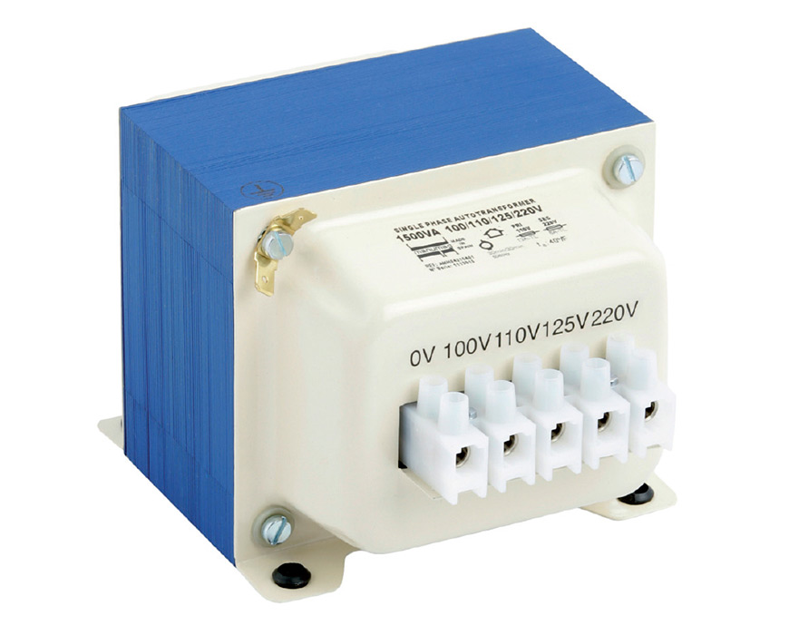
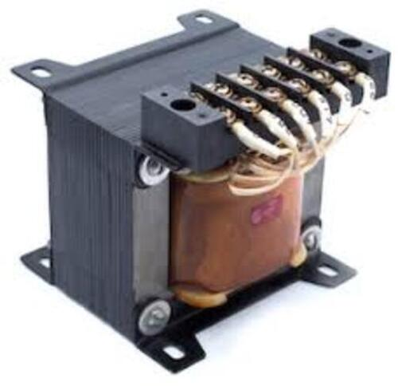
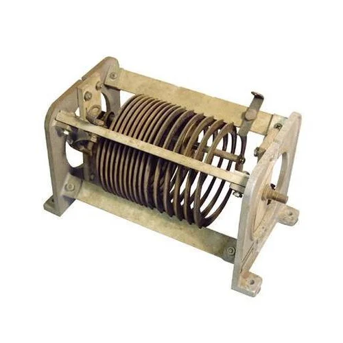
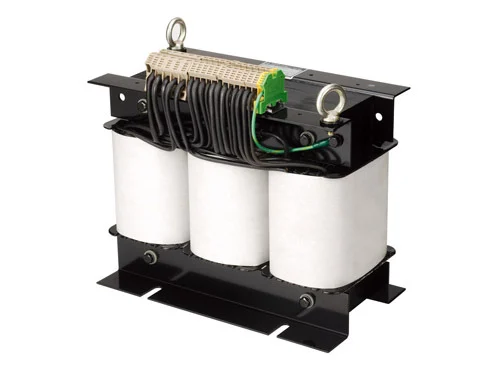
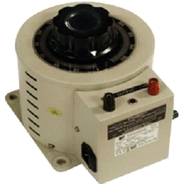

Welcome to ElectroSpecs | Explore Electronics Components | Learn & Build 🚀

STEP UP AUTOTRANSFORMER

STEP DOWN AUTOTRANSFORMER

VARIABLE AUTOTRANSFORMER

THREE PHASE AUTOTRANSFORMER

AUTOTRANSFORMER STARTER